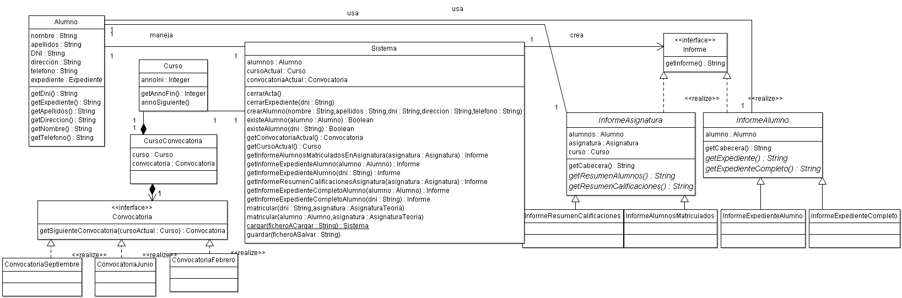

Programación Orientada a Objetos. Curso 08/09
Práctica 1. Introducción al lenguaje Java
Duración: Semanas del 23 de febrero y 02 de marzo (para detalles ver el calendario de prácticas)
Entrega y examen: Semana del 9 de Marzo
Enlace al sitio de descarga de ArgoUML, herramienta para generar el diagrama de
clases de la práctica.
En el fichero tester.zip se encuentra el código fuente del tester de la P1. Además incluye un
ejemplo de fichero build.xml que utilizar para compilar, ejecutar, generar la documentación, etc de un proyecto Java.
En el fichero javadoc.zip puedes encontrar un ejemplo de documentación javadoc para el código de la P1.
Objetivo
El objetivo de la primera práctica es aprender la sintaxis básica de
Java (asumiendo experiencia en C) y adquirir familiaridad
con el entorno de desarrollo NetBeans.
El conjunto de prácticas realizar durante el curso consistirán en implementar un sistema de expedientes académicos.
En la primera práctica el alumno deberá analizar el problema que se plantea e implementar sus primeras clases Java.
Diagrama de clases
En el siguiente diagrama UML se muestran parte de las clases que todos los alumnos deberán implementar durante el curso:

Se trata de un diagrama de clases incompleto que en la P1 el alumno deberá completar con las clases que considere necesarias para el
desarrollo del proyecto final sin tener en cuenta las relativas a la interfaz gráfica de usuario. Concretamente se ha eliminado del diagrama
todas las clases relativas a Asignaturas.
Clases a implementar
En la primera práctica el alumno deberá implementar la clase Alumno según se define en el diagrama de clases anterior e incluyendo:
- Los getters y setters necesarios.
- El método public String toString() que devuelva un String con los datos representativos del alumno.
Para probar el correcto funcionamiento de la práctica, en las próximas semanas se publicará un tester para probar la funcionalidad implementada.
Pruebas y entrega
Las prácticas se deben entregar antes de la fecha de corrección
indicada al comienzo del enunciado, teniendo en cuenta las horas límite
de entrega mencionadas en las normas
de la asignatura. En general, el grupo del lunes tiene hasta las 12 del
mediodía del mismo lunes, y
todos los demás grupos tienen hasta
las 12 de la noche del día anterior a la fecha de
corrección.
De nuevo, siguiendo las normas de
la asignatura, el fichero .zip
a entregar debe incluir:
- un leeme.txt que
describa los ficheros incluidos en el .zip
- el build.xml usado para
compilar y ejecutar la práctica (en general, con el que se entrega con
el enunciado vale).
- una memoria.{pdf,
rtf, odt}. En este caso, la memoria
puede ser bastante breve, y basta con que expliquen las
ideas principales de la implementación de cada una de las funciones
incompletas. También se
debe decir si se ha conseguido pasar todos los casos de prueba, o si
alguno ha dado fallos. En caso de que se produzcan fallos, se debe
explicar cómo se ha intentado resolverlos. Esto sólo vale para
esta primera práctica: en la P2, P3 y P4, las memorias deberán seguir otros criterios.
- los ficheros de prueba
usados para verificar que la práctica funciona. Sobre todo, si se han
modificado para probar casos específicos.
- y los fuentes, en un
directorio llamado "src" con la estructura de directorios necesaria
para que, descomprimiendo el .zip
entregado y escribiendo "ant run" (es decir, ejecutando el "build.xml" includido en el .zip), la práctica se compile y
ejecute correctamente los casos de prueba.
NOTA:
Las entregas que no cumplan los requisitos enumerados en las normas
recibirán una penalización de 0.5 puntos.
Apéndice: Sobre estas prácticas
Este apartado contiene una serie de reflexiones sobre el enfoque de
estas prácticas, porqué se hacen así, y qué se va a pedir en las
siguientes prácticas.
Código en los enunciados
Las prácticas de POO se diferencian de otras en que, junto con cada
enunciado, se entrega bastante código. Esto se hace por los siguientes
motivos:
- Java no es C. Se espera
que todos los alumnos tengan un nivel bastante alto de programación en
C. La sintaxis de Java es muy similar a la de C, y si las primeras
prácticas pidiesen escribir un programa desde cero, el resultado no
tendría nada de orientación a objetos. Si se parte de un programa con
diseño OO, se evita el riesgo de que todo el programa esté compuesto de
métodos "public static".
- Convenciones en Java. hay
mucha más uniformidad en cuanto a estilo de programación en Java que en
otros lenguajes. Hay convenciones de nombrado de clases y de variables,
convenciones sobre los nombres dados a métodos, de formato de
comentarios de cabecera, de indentado, de organización en paquetes,
etcétera. Es mejor partir de un ejemplo en el que todo está escrito
siguiendo estas convenciones que intentar que se apliquen desde cero,
son muchas.
- Uso de librerías.
Programar en Java tiene un gran componente de saber usar código
existente: las librerías disponibles son uno de los puntos fuertes de
Java. Esto es menos cierto en C, donde la mayor parte de las librerías
son externas (y por tanto, no tan estándares). Es fundamental perder el
miedo a las librerías y saber manejar su documentación desde un primer
momento.
- OO y Patrones. La
orientación a objetos promueve la reutilización no sólo de código, sino
también de estrategias de diseño ("patrones de diseño"). Esto se da en
mucho mayor medida que en lenguajes menos abstractos, tipo C. En el
código que se entrega se hace uso de varios patrones establecidos. La
idea es que, desarrollando y extendiendo sobre un buen diseño, se
mejora la capacidad de entender y crear buenos diseños.
(C) 2008-2009 Escuela Politécnica Superior, UAM